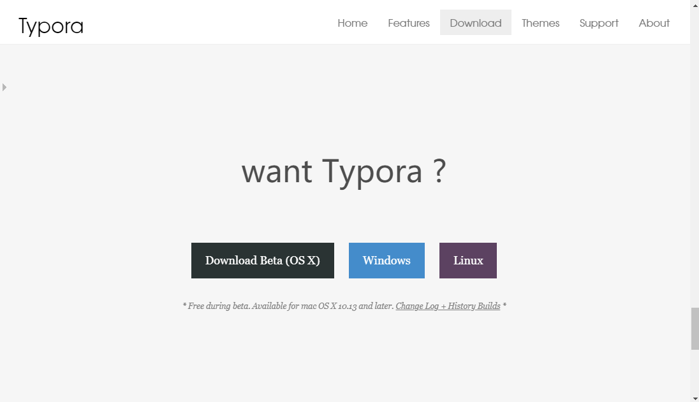
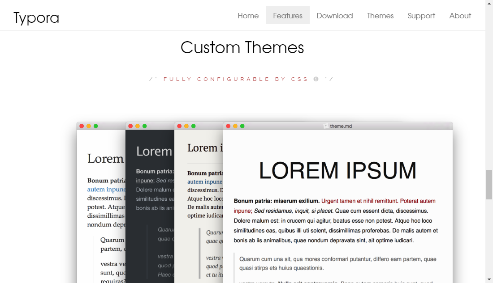
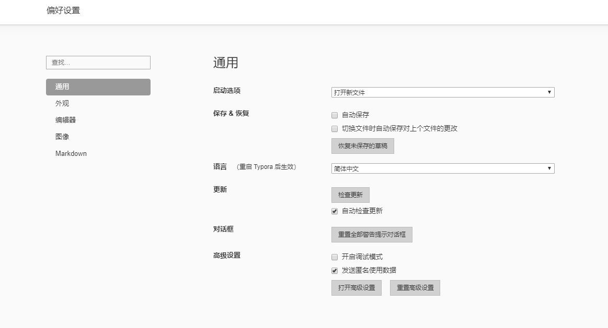
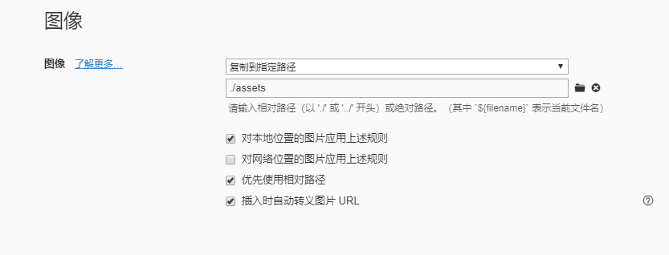
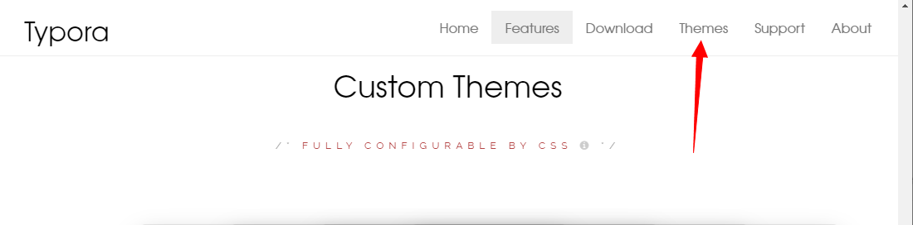
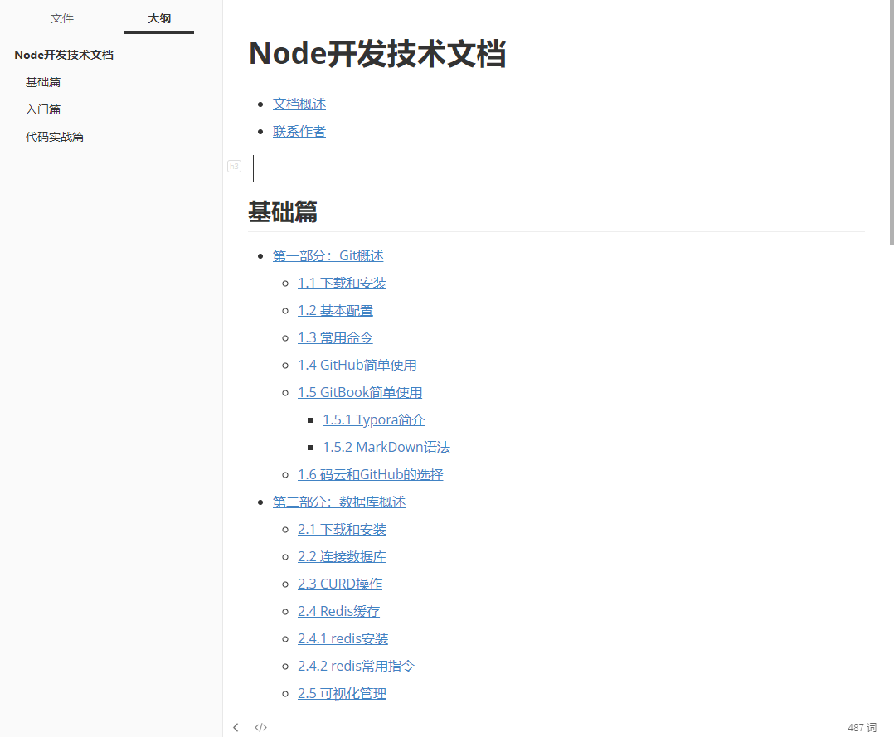

1.5.1 Typora简介
Typora是一款轻便简洁的Markdown编辑器，支持即时渲染技术，这也是与其他Markdown编辑器最显著的区别。即时渲染使得你写Markdown就想是写Word文档一样流畅自如，不像其他编辑器的有编辑栏和显示栏。 Typora 一直是我认为桌面端笔记应用应有的终极形态。用我之前 一篇文章 中的话来说就是，「它的功能之强大、设计之冷静、体验之美妙、理念之先进，我认为值得所有笔记应用厂商学习。」
但一件很尴尬的事情是，由于它极简的设计理念，有许多使用者并没能完全地了解到 Typora 的全部强大功能。我想在这篇文章中由浅入深地介绍 Typora 的功能亮点。无论你从未用过 Typora，还是已经体验了很久，我相信你都能在这篇文章中发现 Typora 新的惊喜。
Typora 是什么
Typora 是一款支持实时预览的 Markdown 文本编辑器。它有 OS X、Windows、Linux 三个平台的版本，并且由于仍在测试中，是完全免费的。

下载和安装
如果此时你已经有了使用Typora的冲动，那就一起来Typora官网进行学习、了解和使用吧。

在Typora官网进入DownLoad页面进行下载，安装包下载完成后就是简单的傻瓜式安装了。我想这部分应该都没有什么压力；
基本配置
软件安装完成后，就可以双击打开Typora软件进行使用了，在我对于Typora的使用感觉里，Typora有提供一些软件的基础设置，可以更好的使用软件进行笔记整理

外观
- 提供窗口样式、字体大小、状态栏、阅读速度、侧边栏以及软件主题设置；
编辑器
- 默认缩进、成对符号、即时渲染、复制行为等常规编辑设置
图像
这个设置我觉得非常重要，我之前写博客或者做笔记的时候难免需要使用到图片进行记录，Typora提供将图片放在指定的位置进行存储，可以有效的防止图片丢失或者显示不出来的问题，用户也可以很友好的进行笔记分享

Markdown
- 主要提供一些markdown的语法设置，关于markdown语法下一篇将着重介绍
主题设置
Typora软件默认使用的是Github主题，如果你觉得不够友好可以在软件的左上方菜单栏里点击主题进行修改，大概有Github、Newsprint、Night、Pixyll、Whitey五个主题选择，对于大多数程序员简单的Github主题就已经够用，如果确实是不喜欢这些略显单调的主题，也可以在Typora官网进行主题下载，例如：

按照官网提示下载对应的主题包，进行使用；
快捷键使用

实际效果
